Mistara
Ritual in Every Cup
Mistara is a premium workplace coffee brand created from within the MJ Flood group. The brief was to build a new identity credible enough to stand beside hospitality-grade coffee while staying true to the group's service heritage. I shaped the brand from strategy through identity, packaging and digital launch.
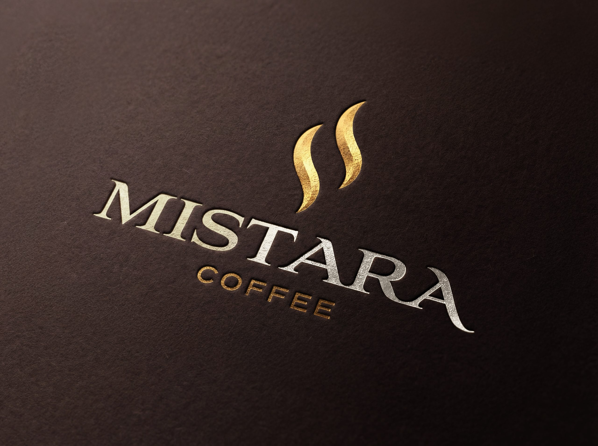
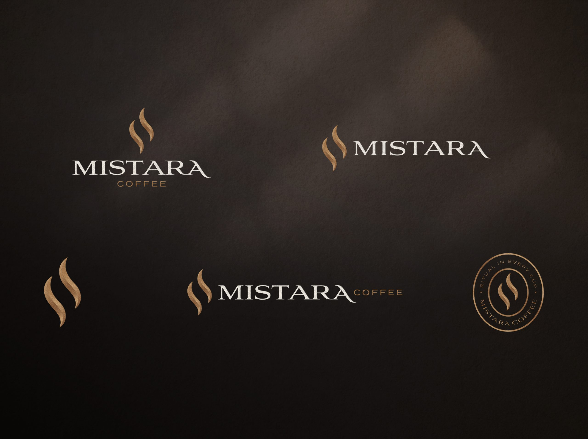
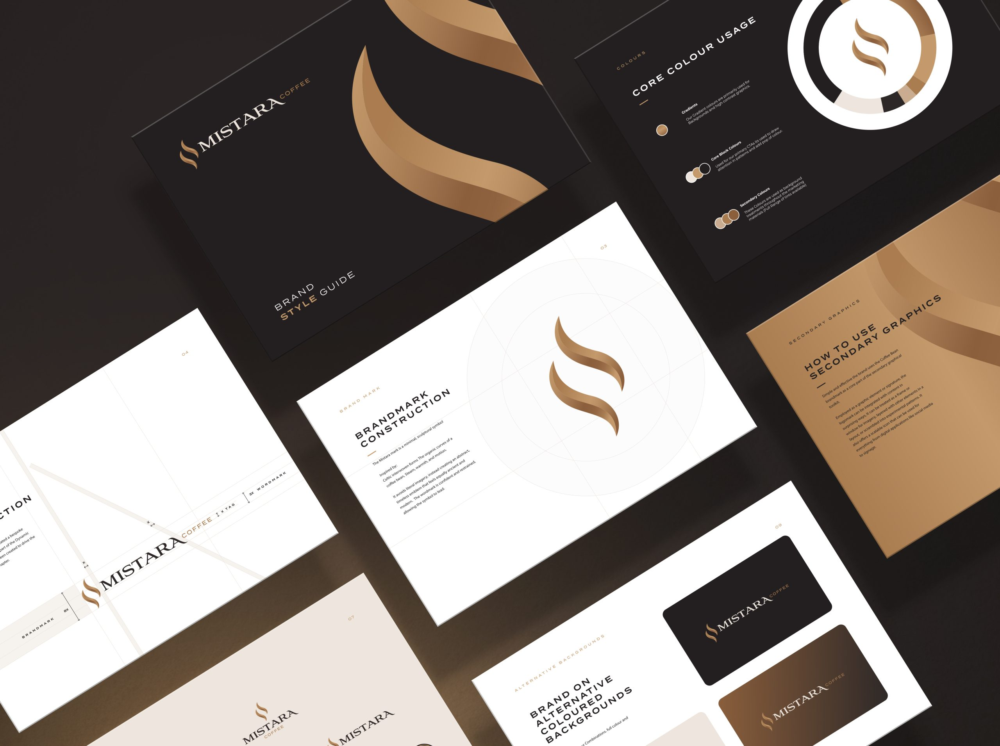
Positioning a new kind of workplace coffee
I positioned Mistara around ritual, focus and workplace culture, lifting office coffee from a utility to an experience. The proposition was simple: premium coffee moments designed for the rhythm of the working day. That framing let Mistara sit convincingly between café-quality coffee and workplace practicality, clearly apart from both vending machines and high-street competitors.
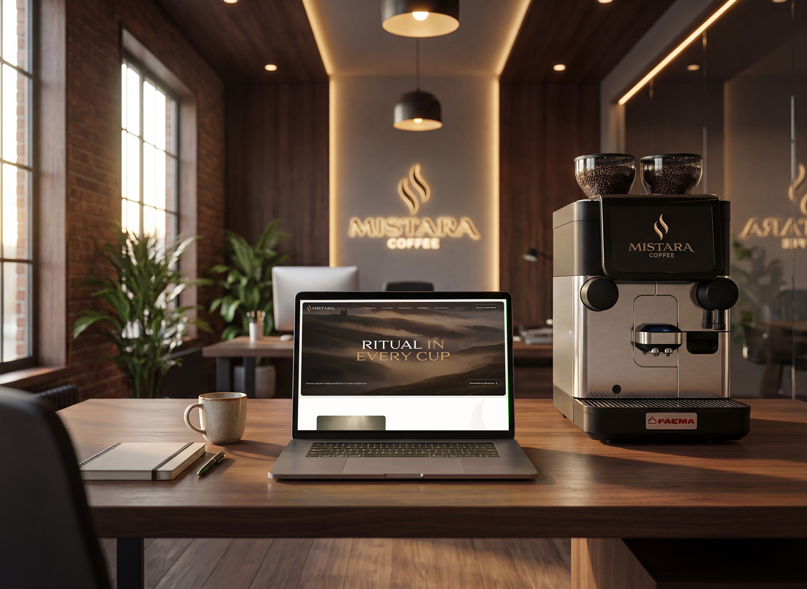
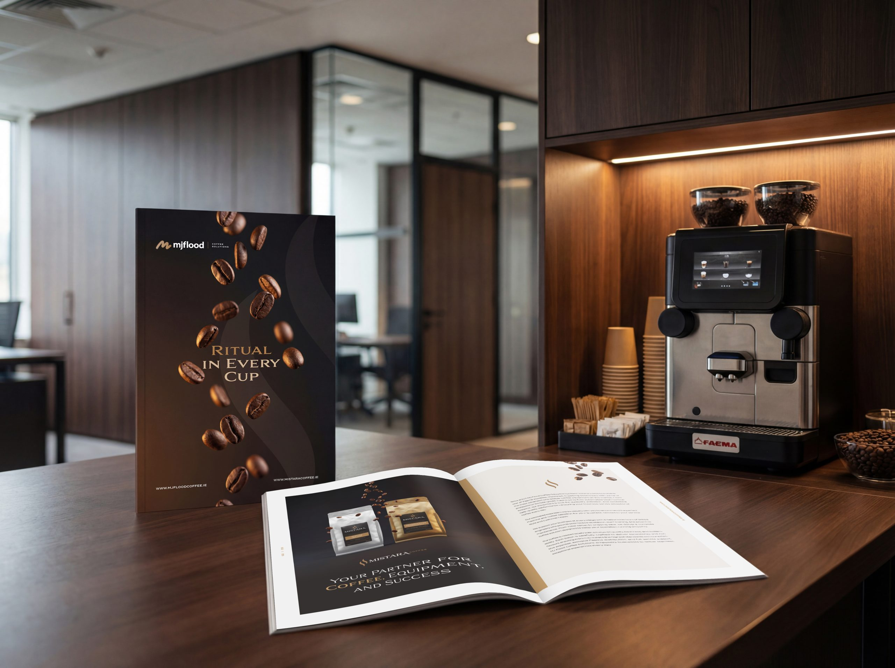
Designing the identity
The identity expresses calm confidence and contemporary craft. I designed a distinctive wordmark and a visual language drawn from flow, steam and mist, quiet references to warmth, movement and atmosphere. A restrained palette and minimal typography give the brand a premium but approachable tone that works across workplace, hospitality and product contexts.
Building a sensory brand world
I developed a wider brand world built on ritual, momentum and the natural phases of the working day. Photography direction, visual assets and messaging frameworks make the brand feel both energising and grounding, and hold the story together across environments, packaging and communications.
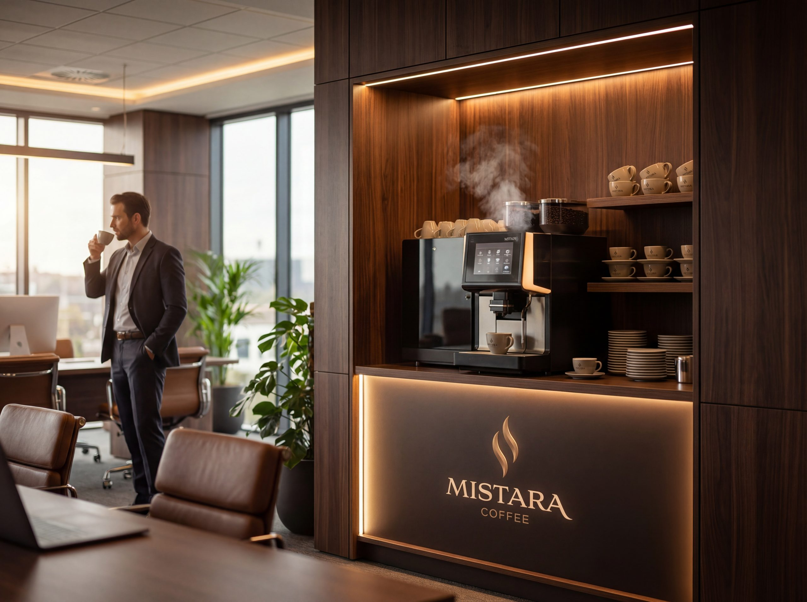
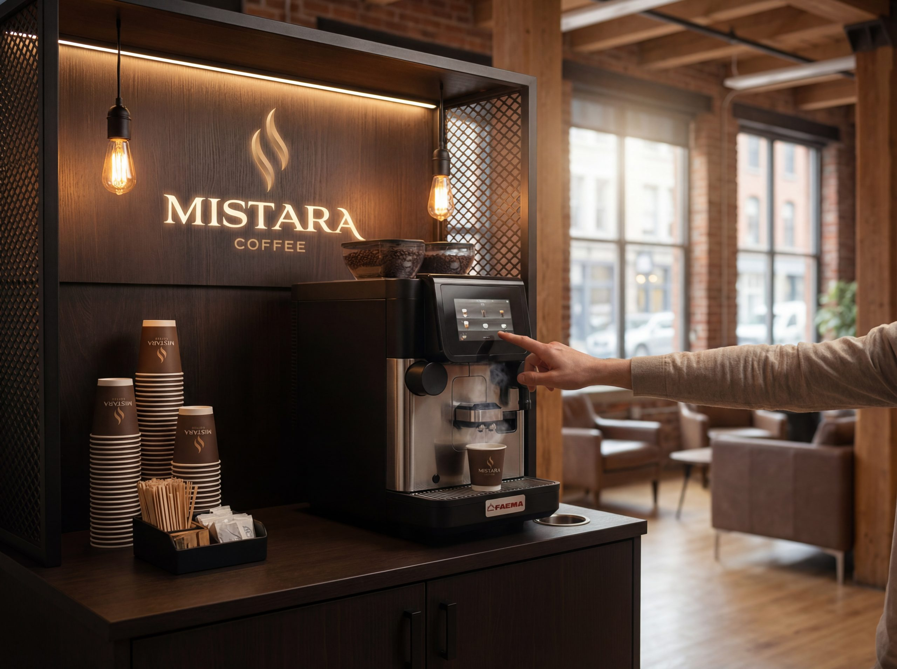
Launching across digital and social
I designed and built the Mistara website as a calm, editorial-led platform that introduces the brand and drives B2B enquiries. The launch social strategy moved in three phases (anticipation, reveal, enquiry) across Instagram, Facebook and LinkedIn, building curiosity through the brand's distinctive visual world before introducing roasts, machines and workplace solutions.
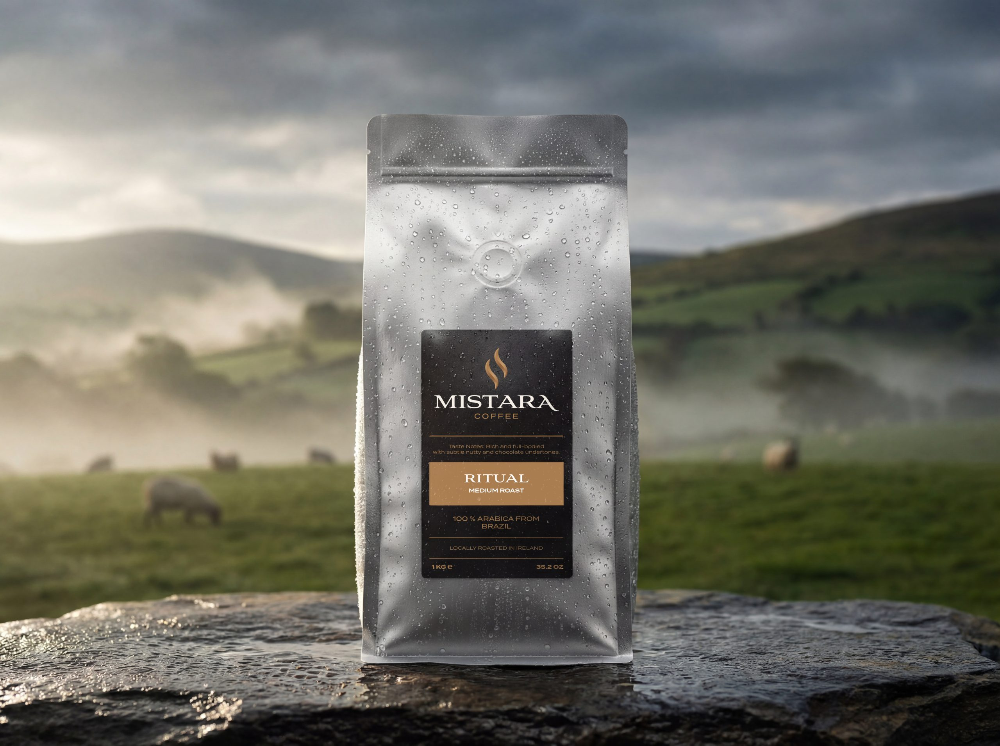
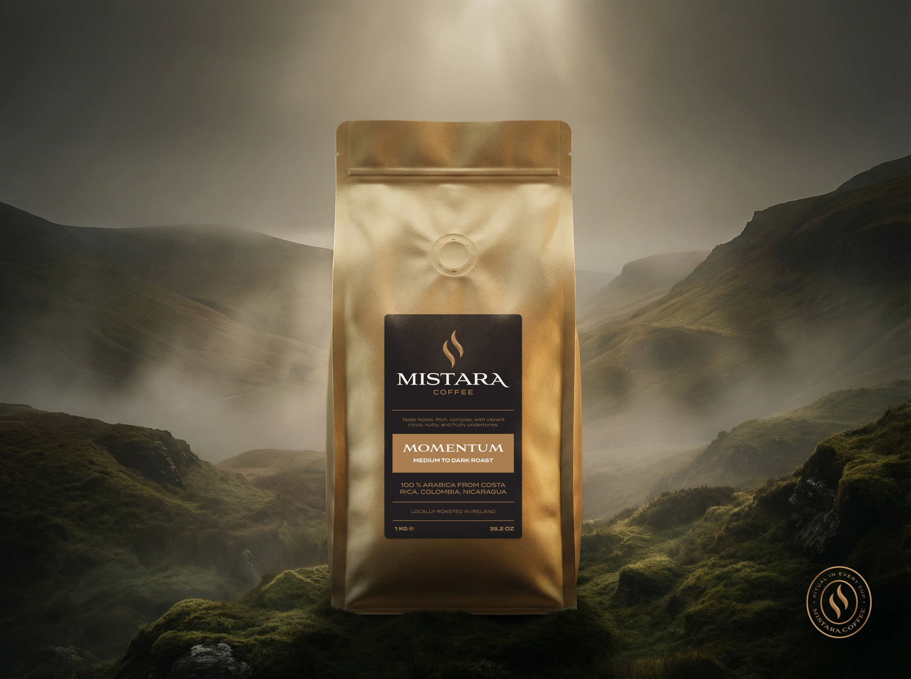
From brand to shelf
The packaging translates the identity into product: minimal structure with warmth and tactility, strong shelf presence, and a system that extends across roasts and formats without losing recognition. Mistara entered the market with a coherent presence from website to pack to workplace, and a foundation built for growth.
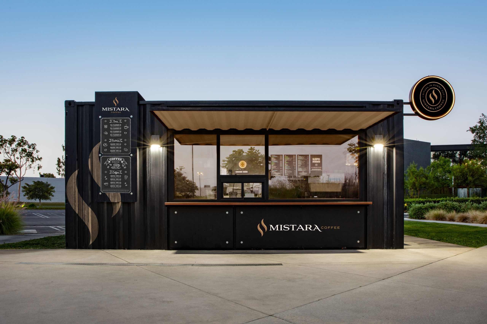
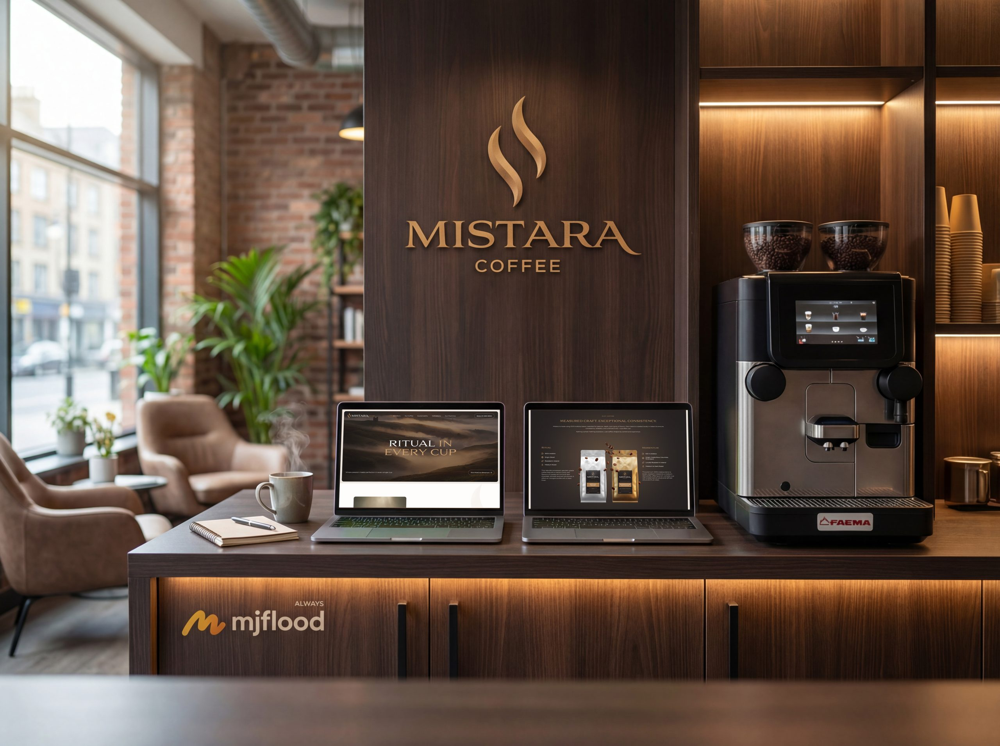
Process notes
How the work actually happened: the phases it moved through and the decisions that shaped it.
- 01Strategy sprint
Positioning workshops with the MJ Flood team to find space between cafe quality and workplace practicality.
- 02Identity & brand world
Wordmark, palette and a visual language drawn from mist, steam and the rhythm of the working day.
- 03Packaging system
A pack architecture that extends across roasts and formats without losing recognition.
- 04Digital platform
An editorial-led site built for B2B enquiry, calm on the surface, conversion-focused underneath.
- 05Phased launch
Anticipation, reveal, enquiry: a three-step rollout across Instagram, Facebook and LinkedIn.
Three decisions that shaped it
Mist, not machinery
Workplace coffee usually sells machines and logistics. I positioned Mistara around atmosphere instead: ritual, warmth, the pause in a working day. The risk was feeling too abstract for B2B buyers, so the practical proof (machines, service, MJ Flood's backing) sits one click deeper, at the enquiry level, where the buying decision actually happens.
One system, three contexts
The identity had to work on a shelf, in an office and on a screen. That argued for restraint: a quiet palette and minimal typography that let one system flex across packaging, workplace environments and digital without three separate dialects. Range growth is handled by the pack system, not by new layouts.
Hold the product back
The launch deliberately withheld the offering. Pre-launch content built the mist-and-ritual world with no product detail at all, which cost some early lead generation but meant the reveal landed with recognition already in place. Enquiries opened only in phase three, once the brand had an atmosphere to sell from.
The brand world, distilled
Core palette and principles from the delivered identity.